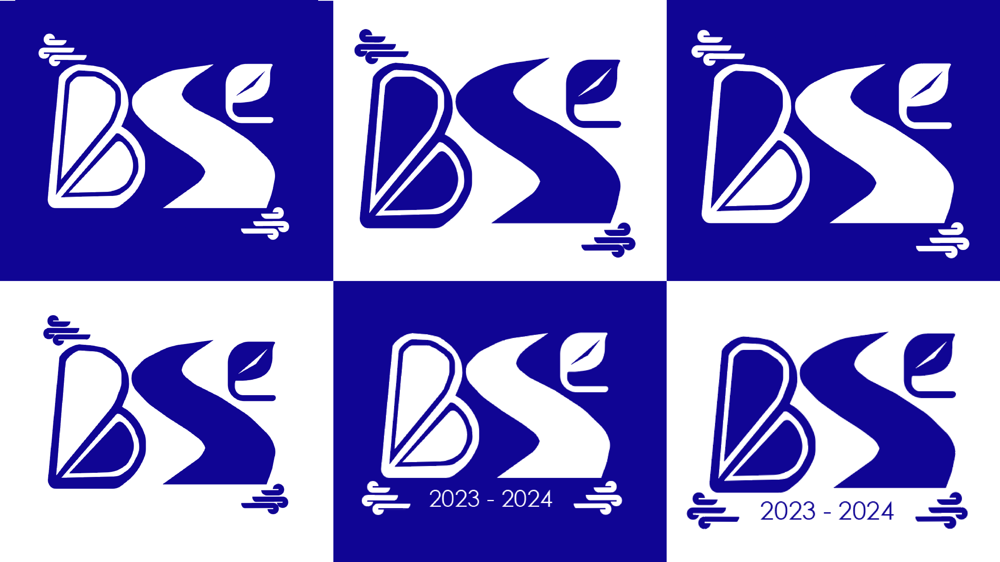
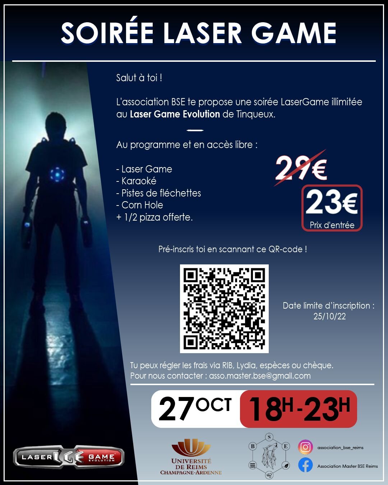
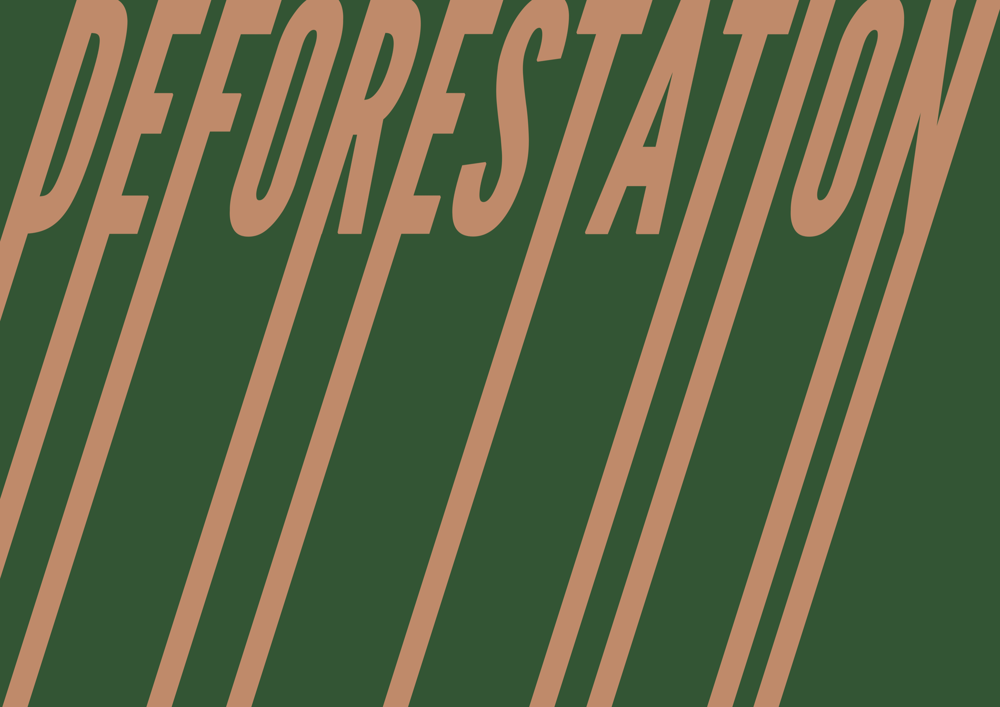
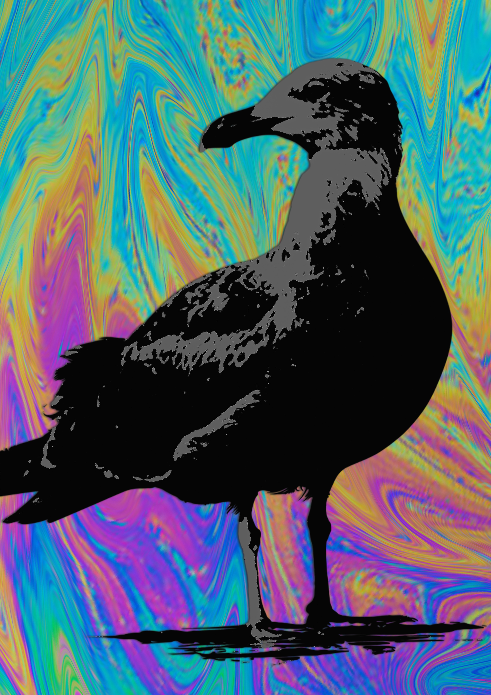
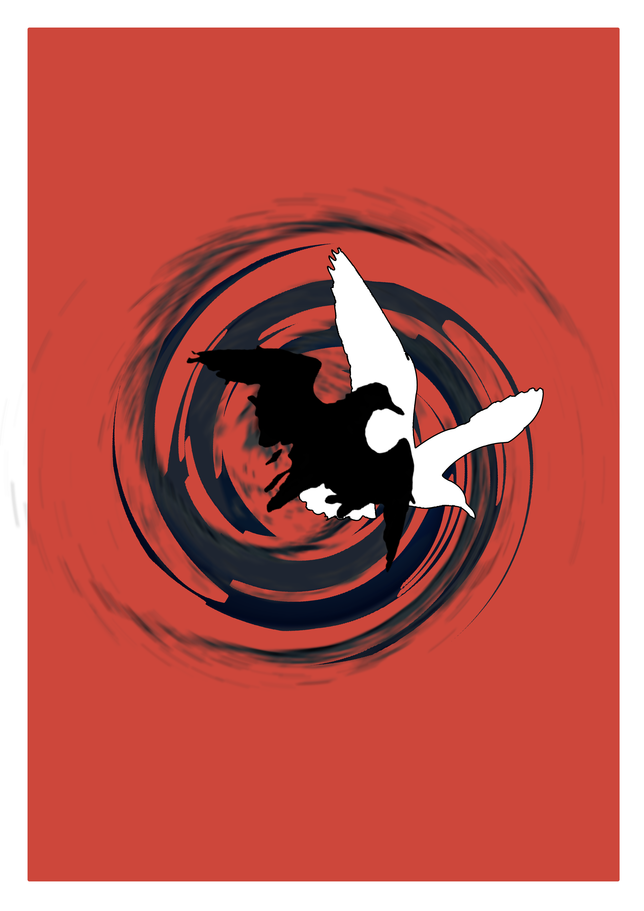
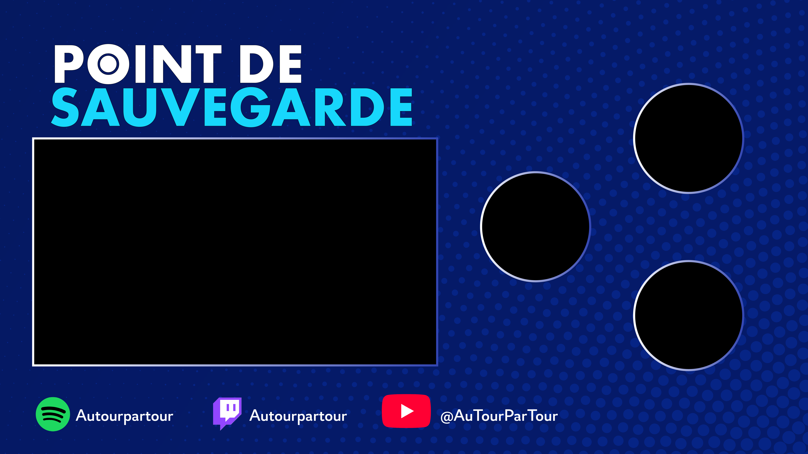

CORENTIN GALINIER
Portfolio
Expériences Professionnelles
ASSISTANT INGÉNIEUR

Laboratoire Interdisciplinaire des Environnements Continentaux • METZ, FRANCE
Acquisition, bancarisation et analyse d’images de diatomées en microscopie optique DIC, dans le cadre du projet européen iMagine (Imaging data and services for aquatic science).
MÉDIATEUR SCIENTIFIQUE

Vigie de l'eau • VITTEL, FRANCE
Encadrement de lycéens dans le cadre de la démarche scientifique : étude de cas d'une pollution aquatique – Test d'écotoxicologie aquatique (Test Daphnie).
Stages
MASTER 2

UMR-I 02 SEBIO (Stress Environnementaux et BIOsurveillance des milieux aquatiques), Université Le Havre Normandie
Interactions entre les diatomées toxiques du genre Pseudo-nitzschia et les consommateurs primaires : étude comportementale chez le copépode marin Temora longicornis.
MASTER 1
UMR-I 02 SEBIO (Stress Environnementaux et BIOsurveillance des milieux aquatiques), Université de Reims Champagne-Ardenne
Optimisation du test des comètes chez une espèce sentinelle d’eau douce (Dreissena polymorpha) afin de distinguer et quantifier les dommages à l’ADN des cellules germinales mâles.
DUT 2

Faculté de Biologie, Université de Vigo • Espagne
Étude de la régulation de la sérotonine intestinale par l’action de peptides (GLP, CCK) liés à la digestion, chez la truite-arc-en-ciel Oncorhynchus mykiss.
DUT 1
Clinique vétérinaire de la Tuilerie • Saran
Appréhension du fonctionnement d’une entreprise en lien avec la biologie, à travers la cohésion d’une équipe d’assistantes et de docteurs vétérinaires.
Projets
Publications scientifiques
DIATLAS XXXX
DIATLAS XXXXXXX
SAMourAi - Image Segmentation Tool
SAMourAi xxxx.
Communication visuelle — Graphisme






Films courts
DISSONANCES
Film court réalisé dans le cadre du concours CROUS 2019/2020 sur le thème "Alchimie". 2ème lauréat régional (CROUS de Strasbourg).
COMME UN BOOMERANG
Film court réalisé dans le cadre du concours CROUS 2020/2021 sur le thème "2050". 2ème lauréat régional (CROUS de Strasbourg).
CONCEPTION
Film court réalisé dans le cadre du concours CROUS 2021/2022 sur le thème "Rêve".

PERSISTANCE
Film court réalisé dans le cadre du concours CROUS 2022/2023 sur le thème "Métamorphose".